Wprowadzenie do SQLite
@wmyszke
Wstęp
Czym jest SQLite
Pierwsze kroki
Narzędzia do obsługi baz SQLite
Przykłady użycia
Skąd właściwie pomysł na prezentację o SQLite?
Mimo, iż projekt SQLite ma swój początek w wydaniu kodu Alpha 29 maja 2000 roku, to obecnie osoby niebędące ze świata IT a chcące rozpocząć pracę z bazami danych i szukające najlepszego wyboru mogą w ogóle nie trafić na bazę SQLite
SQLite jest biblioteką oprogramowania, która samodzielnie realizuje bezserwerowy, bezkonfiguracyjny silnik bazy danych transakcyjnych.
SQLite wymaga niewielkiego wsparcia ze strony bibliotek zewnętrznych lub systemu operacyjnego. Te cecha przyczynia się do dużych możliwości wykorzystania SQLite w urządzeniach wbudowanych. W tym kontekście właściwym zastosowaniem SQLite jest użycie w aplikacjach które muszą być uruchamiane bez zmian na różnych komputerach w różnych konfiguracjach.
Większość silników bazodanowych SQL jest zaimplementowanych jako osobny proces serwerowy. Programy, które chcą uzyskać dostęp do bazy danych komunikują się z serwerem używając między-procesorowej komunikacji (proces aplikacji oraz proces bazy danych, zwykle poprzez TCP/IP) aby wysyłać żądania do serwera oraz by otrzymać rezultaty żądania. SQLite nie działa w ten sposób. W SQLite, proces który chce uzyskać dostęp do bazy danych odczytuje i zapisuje z pliku bazy danych na dysku. Nie ma żadnego pośredniczącego procesu serwerowego.
SQLite nie wymaga instalacji przed pierwszym użyciem. Nie procedury instalacji. Nie ma żadnego serwera który musi zostać uruchomiony, zatrzymany, lub skonfigurowany. Nie ma potrzeby by administrator przydzielał uprawnienia użytkownikom. SQLite nie używa żadnych plików konfiguracyjnych. Nic nie trzeba robić by powiedzieć systemowi że SQLite jest uruchomiony. Awaria systemu lub przerwa w zasilaniu nie wymagają podjęcia działań naprawczych na bazie danych.
Transakcyjna baza danych to taka baza w której wszystkie zmiany i zapytania są atomowe, spójne, wyizolowane oraz trwałe (ACID – atomicity, consistency, isolation, durability). SQLite implementuje transakcje które spełniają wszystkie kryteria koncepcji ACID, nawet gdy transakcja jest przerwana przez awarię programu, awarię systemu operacyjnego lub przerwie w zasilaniu.
Należy wybrać pierwszą pozycję.
Spakowany plik to tylko ~270 KB a rozpakowany ~500 KB
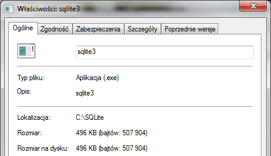Rozpakowanie jest równoznaczne instalacji.
Potrzebna jest linia poleceń
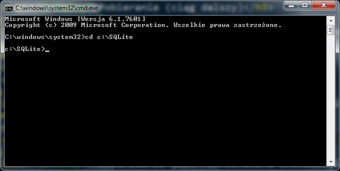Wpisanie sqlite3.exe wlodek.db wskazuje na baze z którą rozpocznie się pracę. Jeśli plik nie istnieje to zostanie utworzony, ale tylko jeśli wypełni się bazę danymi.
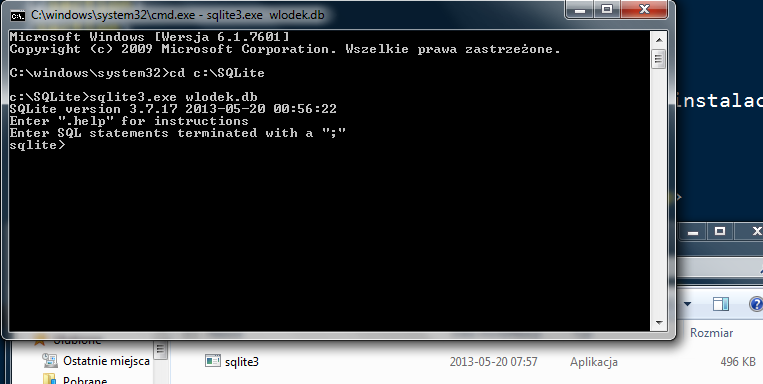Aby wypełnić bazę należy stworzyć tabelę.
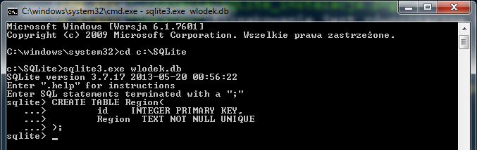 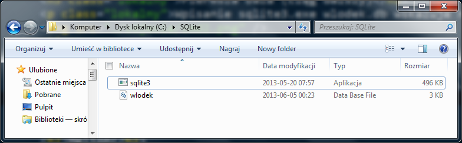Zainstalowany SQLite w Firefoxie
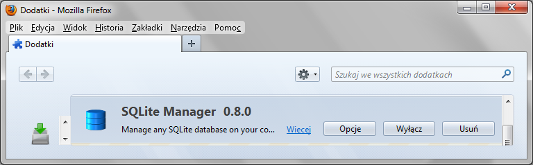Jak uruchomić
SQLite Manager gotowy do pracy
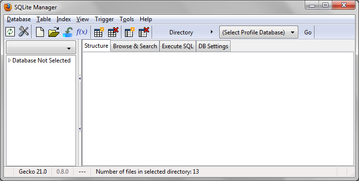SQLite Manager gotowy do pracy (CREATE)
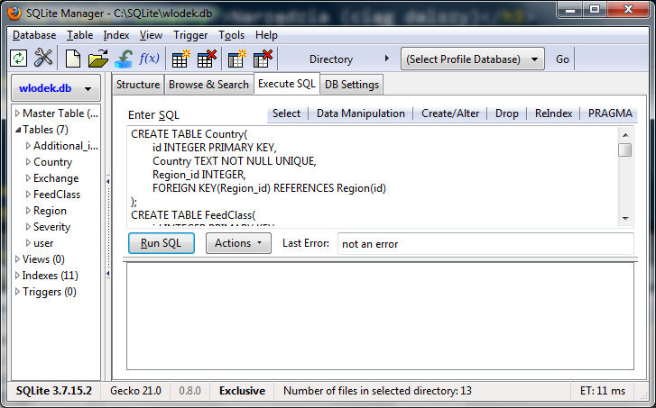SQLite Manager gotowy do pracy (SELECT)
Widać relacje w działaniu
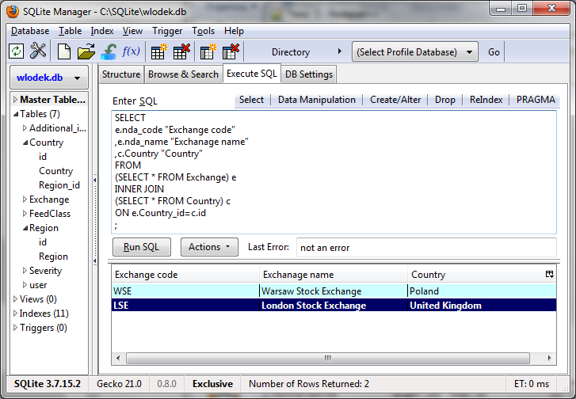SQLite jest standardową biblioteką Pythona
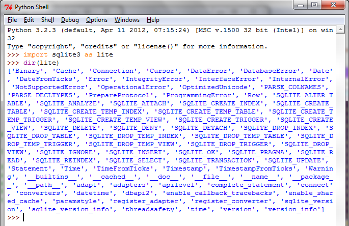
SELECT
e.nda_code "Exchange code"
,e.nda_name "Exchange name"
,c.Country "Country"
FROM
(SELECT * FROM Exchange) e
INNER JOIN
(SELECT * FROM Country) c
ON e.Country_id=c.id
Fragment kodu strony
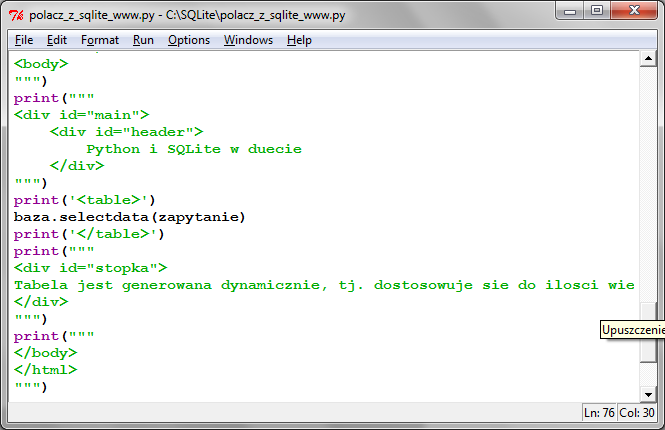